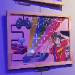
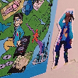
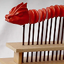
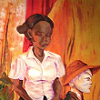
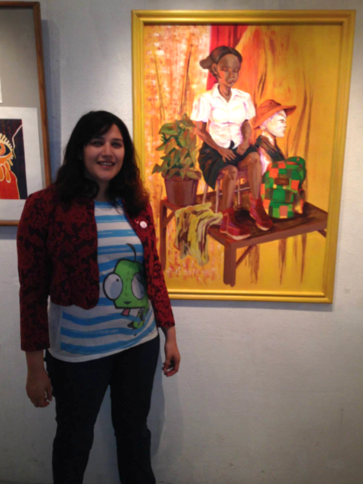

EXHIBICIONES
Muestra 25 Años del Gameboy
Noviembre [2019]
Número 7 [Ilustracion digital]
Participante de la exposición organizada por Poguitoys dentro del Bar El Destello para festejar los 25 años de la consola Gameboy creada por Nintendo.

Festival E-Waste
Julio [2019]
Tierras de Artistas [Ilustraciones digitales]
Participante de la exposición E-Waste de los alumnos de la UNA Multimediales realizada en la sede principal de Artes Multimediales, edición 2019.

Noche de Los Museos
Noviembre [2018]
Pasado Presente [Instalación]
Representando a la universidad como parte de la selección de obras artísticas de la UNA, especialidad Arte Multimedia, exhibidas en el Museo de Calcos y Escultura Comparada Ernesto de la Cárcova.

Festival E-Waste
Octubre [2018]
Dragón Rojo [Escultura interactiva]
Participante de la exposición E-Waste de los alumnos de la UNA Multimediales realizada en la sede principal de Artes Multimediales, edición 2018.

Noche de los Museos
Diciembre [2013]
Martha [Pintura]
Participante de la exposición Educación Artística: Visuales y Cerámica del Salón de Exposiciones Corporación Buenos Aires Sur por segundo año consecutivo.

Noche de Los Museos
Diciembre [2012]
Chica Trufa [Escultura]
Participante de la exposición Educación Artística: Visuales y Cerámica del Salón de Exposiciones Corporación Buenos Aires Sur.

Museo de escultura Luis Perlotti
Octubre [2012]
Identifiquemos lo que no es descartable [Pintura]
Representando al Instituto Superior de Formación Artística Rogelio Yrurtia como artista emergente de las escuelas porteñas.



Giselle Llamas en la Noche de los Museos (2013).